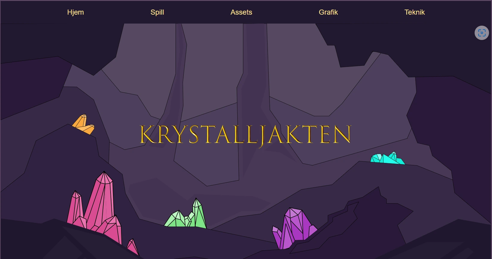
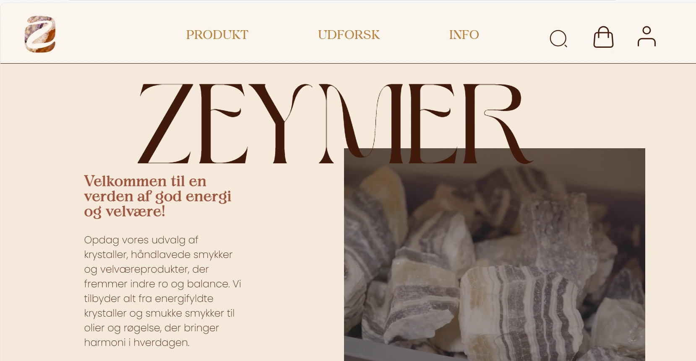

TUVA NOREA ØSTVIK
MULTIMEDIE
DESIGNER
“Design er som en blomst som blomstrer når den blir gitt den riktige kjærlighet og dedikasjon”

MINEPROSJEKTER



Over kan du se tre av prosjektene jeg har jobbet med det siste halve året. Klikk på hver av dem for å komme til hjemmesiden og klikk på se mer for å lære mer om min portoføje og prosessen bak hvert prosjekt.